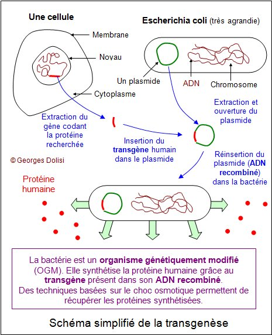

La génie génétique
Les différents mécanismes utiliser pour transférer un gène d’un individu vers un autre sans qu’il ait une intervention des moyennes naturelles de la reproduction.
- Le gène : est une séquence d’ADN transcrit en ARNM cette séquence peut être traduit en chaine polypeptidique.
- La mutation génétique : est une modification de la séquence de nucléotide de l’ADN.
- Les enzymes : sont des protéines spécifiques utiliser pour accélérer une réaction, on distingue trois types des enzymes :
+ Enzymes d’extraction (restriction) : utiliser pour isoler l’ADN. / exp : Eco R1
+ Enzymes de liaison : utiliser pour intégrer les gènes dans le plasmide. / exp : ligaz
+ Enzymes de transcription : utiliser pour transformer l’ADN en ARN exp : transcriptase reverse
- Plasmide : c’est une séquence d’ADN de forme circulaire ou un être vivant utiliser comme intermédiaire pour transformer le gène de la cellule initial vers la cellule hôte.
+ Les étapes de transfert de gène :
- Extraction des gènes : faite par un enzyme de restriction pour couper le gène ou par transcription d’ARN en ADN
- Intégration de gène dans le plasmide : en utilisant les enzymes de liaison pour coller l’ADN.
- Implantation de plasmide hybride dans la cellule hôte.
- Clonage de la cellule hôte pour obtenir une colonie bactérienne.
+ Les applications du génie génétique :
Les perspectives du génie génétique sont aimance et provoque beaucoup d’espoir et d’optimisme, parmi les applications du génie génétique :
- Fabrication des hormones et des enzymes : une insuline humaine à était fabriqué par la génie génétique et déjà commercialiser.
- Fabrication des vaccins
- Modification des gènes : chez les animaux et les végétaux pour l’amélioration des espèces.
- Technique de clonage : est une manipulation récente qui permet d’obtenir un individu sans passer par la fécondation.
